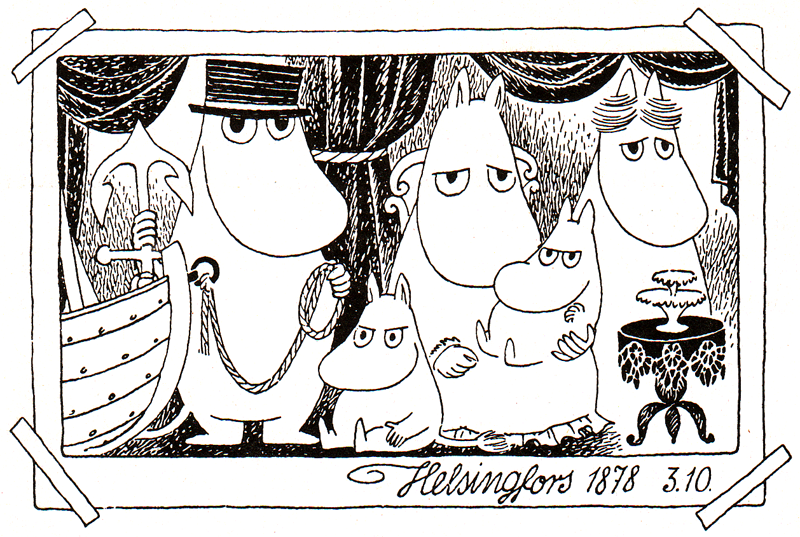
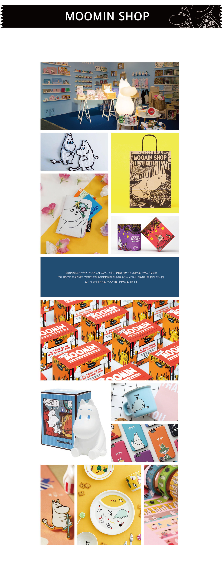
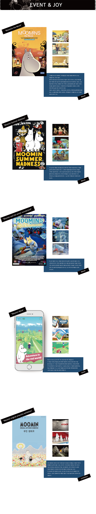
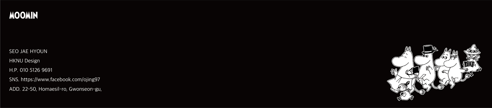

작가가 10대였을때 첫째 남동생과 말다툼을 하고 그 분풀이로 동생을 코가 길죽한 이상한 생물로 화장실 벽에 그린게 무민의 모티브가 되었다고 한다. '무민 트롤'이라는 이름은 16살일때 스웨덴의 스톡홀름의 삼촌 집에서 지냈는데, 삼촌이 토베 얀손에게 한밤중에 음식을 먹지 말라고 경고하는 의미로 "한밤중에 냉장고를 열면 '무민 트롤'이 네 코를 물어버릴 거야!"라고 말한데서 유래했다.
HISTORY
CHARACTER
“Moomin (무민)”
항상 경이로운 행복을 찾아 다니는 무민. 돌이나 조개껍질 등을 모으면서도 즐겁고 행복해하며, 늘 열정적이기 때문에 모든 일을 쉽게 받아들이는 낙천적인 성격인 무민은 순진하고 그야말로 마음이 너무 따뜻하다.
4

5

